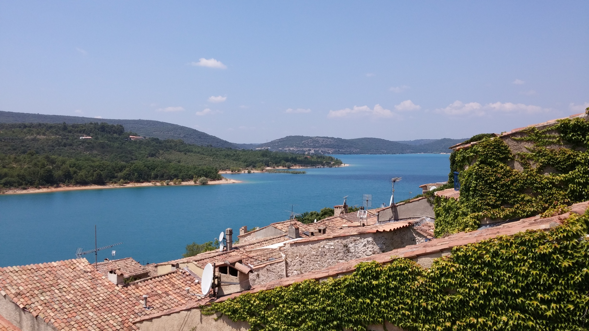
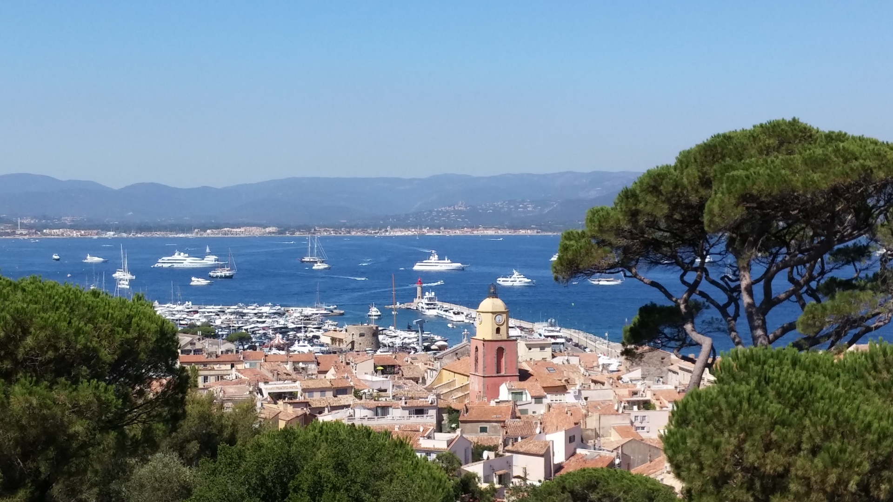
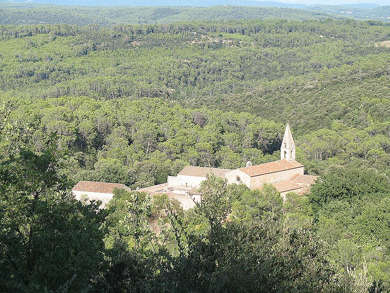
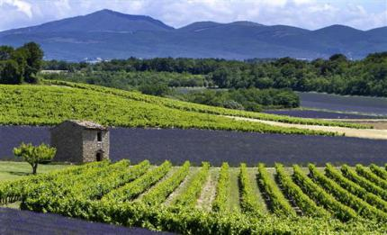
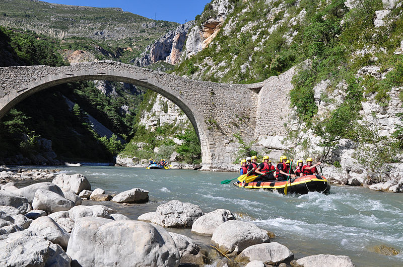

The région
 Provence is such a diversified region that everyone will find their happiness. As holidays are first of all a relaxing time the area offers plenty of cozy and peaceful corners, cultural sites or sports activities.
Provence is such a diversified region that everyone will find their happiness. As holidays are first of all a relaxing time the area offers plenty of cozy and peaceful corners, cultural sites or sports activities.
 The nature lovers will find their happiness not far from Carcès. The Sainte-Croix Lake and the Verdon Regional Park are a must in the region just like the Maures and the Esterel massifs.
 Along the way you can discover the perched villages of Provence such as Moustiers-Sainte-Marie or Tourtour and the lavender fields of Haute Provence. Less than an hour from home, discover the Mediterranean coast, beaches and hectic towns such as St. Tropez or the Hyères islands.
 The area also offers many cultural activities such as the Cistercian abbey of Thoronet, dating from the 12th century and the cave dwellings of Cotignac and Villecroze.
 The area also offers many cultural activities such as the Cistercian abbey of Thoronet, dating from the 12th century and the cave dwellings of Cotignac and Villecroze.
 Sports and hiking enthusiasts will find their happiness. The practice of many activities such as mountain biking, kayaking, rafting, golf, climbing and many others is also available around Carcès.